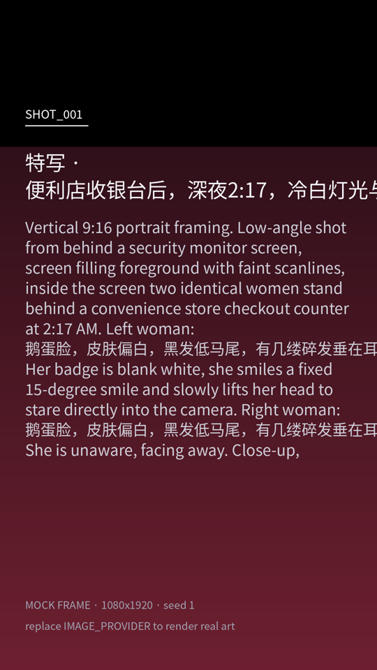
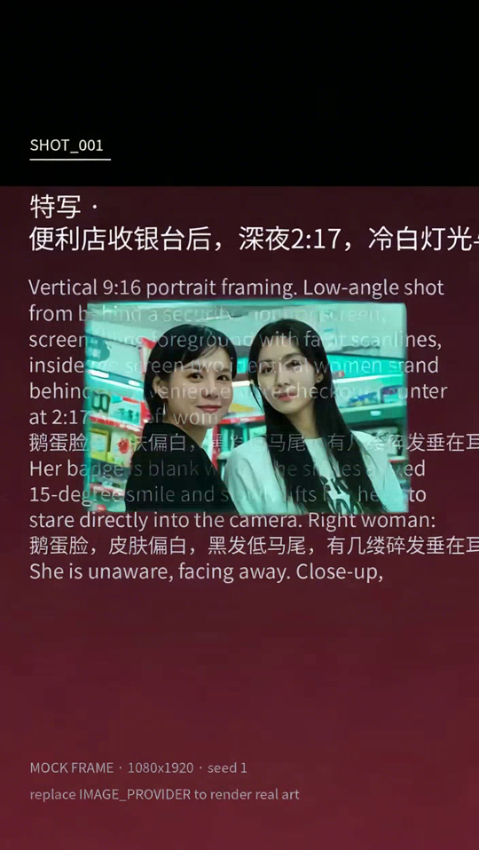
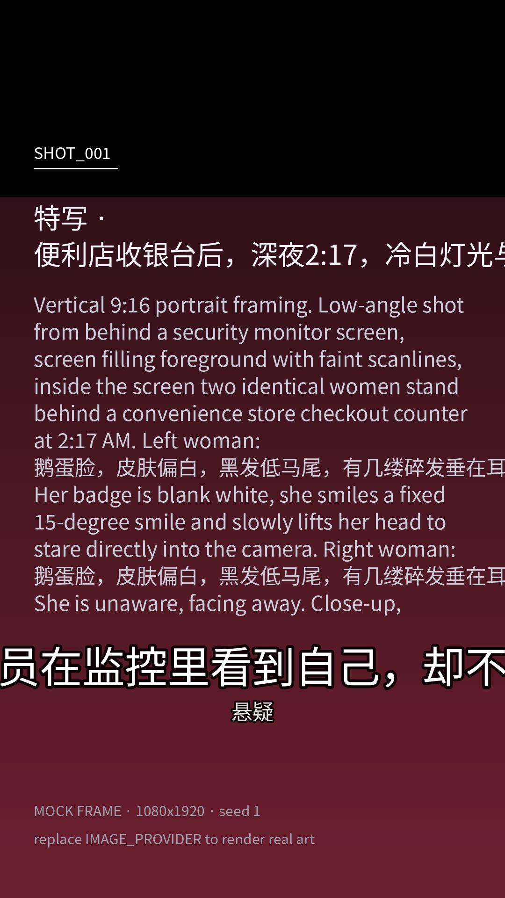

林晚
主角22 岁店员，值夜班第三个月，习惯盯着监控屏幕发呆。
外观锚点Black shoulder-length hair with blunt bangs, pale skin, small mole under the left eye, light grey convenience-store uniform with a red name tag, tired eyes.
深夜便利店店员在监控里看到自己，却不知身后还站着另一个。——悬疑 · 冷调惊悚 · 竖屏 9:16
样片说明：关键帧由本地 mock 渲染器绘制（分镜卡），视频段由火山方舟 Seedance 1.0 真实生成（480p 图生视频），再由 ffmpeg 上采样合成到 1080×1920。无配音内容，音轨为静音 AAC。
「监控里那个我，为什么比我先抬头。」
appearance anchor · 逐镜复用的外观锚点
22 岁店员，值夜班第三个月，习惯盯着监控屏幕发呆。
外观锚点Black shoulder-length hair with blunt bangs, pale skin, small mole under the left eye, light grey convenience-store uniform with a red name tag, tired eyes.
监控画面里的倒影，动作比她慢半拍，表情却更早出现。
外观锚点Identical to 林晚 in face and clothing, but the name tag is blank, hair is dry while hers is damp, and the eyes never blink.
video-bench 维度体系 · 本地像素测量
| 维度 | 权重 | 条 | 得分 |
|---|---|---|---|
| imaging_quality | 0.15 | 0.837 | |
| aesthetic_quality | 0.15 | 0.797 | |
| temporal_consistency | 0.20 | 0.941 | |
| motion_effects | 0.15 | 1.000 | |
| color_consistency | 0.10 | 0.947 | |
| scene_consistency | 0.15 | 0.512 | |
| object_consistency | 0.10 | 0.686 | |
| 综合 | — | 门槛 0.62 · 通过 | 0.823 |
一处已知问题：初版阈值按 mock 分镜卡校准（帧间差约 4），在真实 Seedance 片段（帧间差 18.9、闪烁 8.8）上把正常运镜误判成抖动，motion 得 0 分、综合只有 0.518。改成区间打分后，同一段素材重算为 0.823。
mock 关键帧 → Seedance 视频 → 合成成片



单镜 · 90.8 秒 · 6 次 LLM 调用